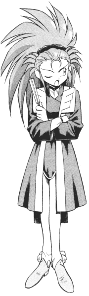

Misc FanFics: A-C
|
This section is dedicate to other works that are losely considered fan fics.
This page holds poems, spam fics, song fics, short fics, and many other tangental
works. Please go here if you would like your works
published. |
New * A-C *
D-J * K-R *
S-Z * MSTs |
A
Absolute Zero
(absolute____zero@HOTMAIL.COM)
Airstrike
(Sawdust28@hotmail.com)
-
Amityville
A songfic made for the hell of it, contains characters from many series.
4KB -9/17/2001
-
An Author's Desperate Plea
The story is about: An author's sad attempt to defend Sakuya. 7KB
-9/17/2001
Akodo X
(AkodoX@worldnet.att.net)
Agent_Grey
(eskar_the_pirate@yahoo.co.uk)
Airstrike
(Sawdust28@hotmail.com)
-
Cuz I got high
A good example of when Anime characters get high, you've been warned.
7KB -11/15/2001
Garrett Albright
(albright@mac.com)
-
"The Trick"
Ryoko pulls a cruel trick on Ayeka. 3KB -4/16/2001
Alexander
(tea_equals_beer@yahoo.com)
Wylie "coyote" Allen
(wylieallen1@yahoo.com)
-
Super Cyber Showdown
A bunch of video game characters duke it out. It doe's have something
to do with Tenchi. 3KB -9/17/2001
Jorge "Evil" Alvarado
(ryoushi010@hotmail.com)
-
The Real Ryoko
It is a parody of "the real slim shady" by eminem. 5KB
-12/29/2000
-
It wasn't me
it is a parody of "it wasn't me" by Shaggy. 4KB -12/29/2000
-
Washu Fed Up
Songfic, A parody of DMX's Party Up. 5KB -9/17/2001
Carrie Amoroso (Ryoko0o@msn.com)
-
At Night
Ryoko's thoughts about a slumbering Tenchi and what tomorrow will
bring. 2KB -9/18/2000
-
Good morning Ryoko
A discussion with Tsunami and the morning after. 3KB -11/27/2000
-
Consequences
Saying no can have grave consequences. 4KB -9/25/2001
-
Watch Me Sleep
Songfic. Tenchi and Ryoko. 4KB -9/25/2001
Mike Andrade
(hyro_yewie@yahoo.com)
-
The Message
A songfic based of Dr.Dre's song, "The Message." 4KB -1/8/2001
Andrew (akunz@cctr.umkc.edu)
Andrew
(c621358@showme.missouri.edu)
-
"Cabbula"
A Halloween spam fic wit an X-over element. 16KB -10/31/1998
Angel "Sailor Empyrean"
(SlrEmpyrean@aol.com)
-
Angel Wings, a poem
A poem written about a dream Tenchi has once in my series, Tenchi
Mystique. 2KB -7/26/2001
Anime Illusion
(sagehalo@hotmail.com)
-
Why don't I have Tenchi?
Ever heard Missy Elliot's "All in my Grill?" Put a Kiyone/Mihoshi
twist on it and this is what you get. 2KB -9/22/2001
Anonymous
(Frozeen_one@hotmail.com)
AniManiacW
(AniManiacW@aol.com)
Christopher Angel
(c_j_angel@hotmail.com)
Paul Arezina
(arezina@acad1.stvincent.edu)
Arjak (arjak2@yahoo.com)
Marty Van Assche
(Tenchiken@juno.com)
The Author
(thedude782000@cs.com)
-
Info-merical
A presentation of the De-lemonizer 2000. 14KB -12/23/2000
-
Lemonbusters
A parody of the song Ghostbusters. 2KB -12/27/2000
Ayumi-chan
(AyumiTsukino@aol.com)
B
Heather Babcock
(BABC2313@MAIL.FORBIN.NET)
-
Gags, Scenes and One-liners
An idea about generating new stories for other people by setting lines
and senarios up in a story-like format. 18KB -11/5/2000
Robin "Rob_chan" Balkovich
(rob_chan@sailormoon.com)
Erin L. Baliya
(febrose82@home.com)
-
For the Love of a Mother
Ryoko and Washu get into a bit of an argument and it results in Tenchi
trying to convince Ryoko to give Washu a chance. 6KB -1/29/2001
Julie Barron
(julieanne14_98@yahoo.com)
Beagle-san
(beagle_san@hotmail.com)
Vance "Civanfan" Benson
(Civanfan@aol.com)
Jason "BoneparteOzaki" Bertovich
(Makoto_chan@elhazard.net)
Bglanders (BGlanders@aol.com)
-
"Nobouki's Tape"
Tenchi Finds one of Nobouki's tapes and finds a surprise. 2KB
-7/11/1998
-
A Friendly Dinner
Various characters from various Tenchi fics interact. 19KB
-2/2/1999
-
Aeka
A poem about Aeka 2KB -6/13/1998
-
Five Women
A collection of five poems. 3KB -11/14/1998
Blazer
(Dragon11684@juno.com)
Blue-Haired Goddess
(bluehairedgoddess@tenchiclub.com)
-
"The Identity of an Avitar"
An introspective SI non-fic about advitars, identities and anime idols.
8KB -4/23/2002
-
"Sometimes at Night"
Tenchi stays up one night to realize a very familiar phenomenon. Prequel
to poemfic "He Smiled at Her." 9KB -4/23/2002
-
"Daddy's Heart"
Another conversation piece between Tenchi and Ryoko. This time, set
in the Daughter of Darkness universe. Tenchi's thoughts on his new situation.
11KB -9/13/2002
Octavia "Pretty Girl" Bogan
(Nbogan1023@aol.com)
-
No Girls
Songfic sung to TLC's No Scrubs. 2KB -5/3/2002
Boss Suerte
(Corriganluckey69@yahoo.com)
-
Washu Plays Santa
A day of madness in the misaki house, thanks to Lil-Washu. 7KB
-1/22/2001
~Brain~Wav~
(~brain~wav~@techie.com)
-
Ryosashuka
What happens when everyone's favorite space pirate gets a set of Potara
Earrings? A totally pointless spamfic, with a small xover element. 2KB
-9/10/2000
-
Where Washu's puppets come from
Washu's new security system for Tenchi's room. 4KB -10/8/2000
~Brain~Wav~ (bzellers@pa.net)
and many others
-
Ramblings of the 15 Crazed Otaku
This fic has it all (random acts of violence, SI, x-over) by The Planet
Namek.com Tenchi Muyo! message board posters. 8KB -4/16/2001
Brother Ala
(JukkaJikka@hotmail.com)
Jay Buck
(jay_b39@hotmail.com)
-
Washu's Lament
Ayeka finds out about her missing brother. 8KB -7/22/2001
Buckeroo
(buckfloyd@yahoo.com)
-
Two Princes (of Jurai)
Parody of the Spin Doctors' "Two Princes," in which an unidentified
person gives Ayeka some advice. 4KB -7/20/2001
Brian Burke
(the_krane@hotmail.com)
Sheldon Burnham
(gamlain@airmail.net)
Kevin Byrnes (WFFan1@aol.com)
C
Cabbit Lover (TCSHAN@aol.com)
Caligula
(Caligula@satanism.org)
Robert J. Cannard
(fanfics@bobtmigo.com)
Captain Generic
(Dr_vockenster2@yahoo.com)
Dennis Carr (ke6isf@nerv.nu)
John Carter
(CopycatZero@aol.com)
Magda Castillo (RyokoMR@aol.com)
-
Fear
An analysis of Ryouko's feelings, while she guards a sleeping Tenchi.
3KB -1/24/1999
Cat (cleolucky@aol.com) and
Kitty
(krazykids@mindspring.com)
-
Reality Bites
A Tenchi Muyo and Sailor Moon short X-over. 3KB -3/20/2000
Cav (cav@wpi.edu)
Darius Chan
(dman_the_original@yahoo.com)
-
"Tenchi’s Love"
A Poem that Tenchi professes his love to Ryoko. 3KB -10/17/1998
Jenny 'Android18' Chan
(android18@hotmail.com)
Lesell Charis
(lesell_charis@yahoo.com)
Cheesemonkey
(CheeseMonkeyC@aol.com)
-
Tenchi the Pirate
A fanfic in which the tenchi cast are all pirates at sea! 7KB
-12/21/2001
Chessy Cat
(DarkblueRoots23@aol.com)
-
Pirate Chick
Parody of "Sk8er Boi" from Avril Lavigne. Punk rock meets Tenchi Muyo!
What's next? World domination! 5KB -9/17/2002
Chibi Kione
(chiba_mamorua@yahoo.com)
-
Letters From the Future
A letter discovered by Washu reveals more to the Chibi-s past and
true alligance. 3KB -9/21/2001
CMM (hearts@bentonrea.com)
-
Best I Ever Had
Tenchi finds out the best he ever had. Song by Vertical Horizon. 3KB
-9/20/2001
Henry J. Cobb (Hcobb@slip.net)
Elwin B. Coldiron
(bigkwell@juno.com)
-
Critical Assessment
Short fiction inspired by "We Belong/And If I Fall" by Jeffery L.
Harris. 3KB -11/11/2001
-
Quizno® Muyo!
Toasty tribute to those Quiznos® adds - Tenchi style! 2KB
-9/13/2002
-
Quizno Muyo! - The Return
This time, it's Ryoko that get's the Quizno's treatment. 3KB
-9/13/2002
Connie Q
(evilsithlorddarthconnie@startrekmail.com)
CoolMax_Zero
(coolmax_zero@hotmail.com)
-
Sakuya Gotta' Die
An song about killing the most painfully annyoing girl in all of cartoon
history. 2KB -8/1/2001
Cross (StMike86@aol.com)
Alex "The Semi-Great Enigma" Curtindolph
(enigma@iamdstudents.com)
Cyrus Marriner
(rowsdower@seanbaby.com)
-
Encyclopedia Washu
No case is too large or too small for the Greatest Scientific Genius
in the Universe! 10KB -3/26/2002